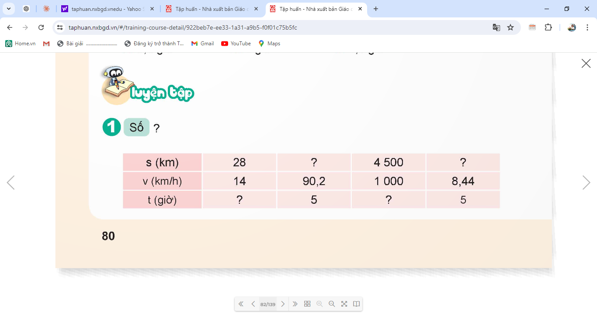
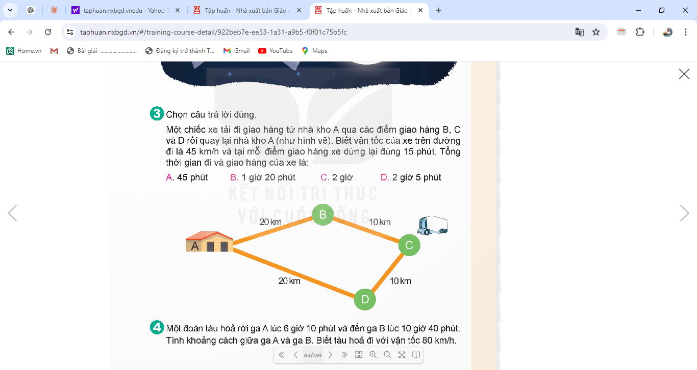

TOÁN TUẦN 29
Thời gian áp dụng: Từ ngày ………….. đến ngày …………………
QUÃNG ĐƯỜNG, THỜI GIAN CỦA MỘT CHUYỂN ĐỘNG ĐỀU (T3)
I. YÊU CẦU CẦN ĐẠT:
1. Năng lực đặc thù:
- Biết được cách tính quãng đường, thời gian của một chuyển động đều.
- Vận dụng được cách tính quãng đường, thời gian để giải các bài toán của chuyển động đều, thực hành tính quãng đường, thời gian theo các đơn vị đo khác nhau.
2. Năng lực chung.
- Năng lực tự chủ, tự học: Chủ động tích cực tìm hiểu cách tính quãng đường, thời gian của một chuyển động đều.
- Năng lực giải quyết vấn đề và sáng tạo: Biết được cách tính quãng đường, thời gian của một chuyển động đều trong một số tình huống thực tế.
- Năng lực giao tiếp và hợp tác: Có thói quen trao đổi, thảo luận cùng nhau hoàn thành nhiệm vụ dưới sự hướng dẫn của giáo viên.
3. Phẩm chất.
- Phẩm chất chăm chỉ: Ham học hỏi tìm tòi để hoàn thành tốt nội dung học tập.
- Phẩm chất trách nhiệm: Có ý thức trách nhiệm với lớp, tôn trọng tập thể.
II. ĐỒ DÙNG DẠY HỌC
- SGK và các thiết bị, học liệu và đồ dùng phục vụ cho tiết dạy.
III. HOẠT ĐỘNG DẠY HỌC
Giáo viên soạn: Lê Hồng Minh – Tài liệu bản quyền, nghiêm cấm chia sẻ.
Hoạt động của giáo viên | Hoạt động của học sinh | |||||||||||||||||
1. Khởi động: - Mục tiêu: + Tạo không khí vui vẻ, phấn khởi trước giờ học. + Thông qua khởi động, giáo viên dẫn dắt bài mới hấp dẫn để thu hút học sinh tập trung. - Cách tiến hành: | ||||||||||||||||||
- GV tổ chức cho HS chơi trò chơi “Ai nhanh, Ai đúng” để khởi động bài học. Câu 1: Công thức nào sau đây dùng để tính quãng đường? A. v = s : t B.s = v × t C. t = s : v D. V = t × s Câu 2: Công thức nào sau đây để tính thời gian? A. v = s : t B. s = v × t C. t = s : v D. v = t × s - GV Nhận xét, tuyên dương. - GV dẫn dắt vào bài mới: Chúng ta đã biết cách tính quãng đường và thời gian như thế nào. Vậy để củng cố cách tính quãng đường và thời gian cô và các bạn cùng tìm hiểu bài học ngày hôm nay. | - HS tham gia chơi trò chơi
Câu 1: B
Câu 2: C
- HS nhận xét. - HS lắng nghe.
| |||||||||||||||||
2. Hoạt động thực hành - Mục tiêu: + Biết được cách tính quãng đường, thời gian của một chuyển động đều. + Vận dụng được cách tính quãng đường, thời gian để giải các bài toán của chuyển động đều, thực hành tính quãng đường, thời gian theo các đơn vị đo khác nhau. - Cách tiến hành: | ||||||||||||||||||
Bài 1. Số?  - GV mời HS đọc yêu cầu bài tập - GV yêu cầu HS phân tích bài tập - GV mời HS làm việc nhóm 4 - Gv mời HS chia sẻ kết quả.
- GV mời HD nhận xét bài nhóm bạn - GV nhận xét tuyên dương (sửa sai) |
- HS đọc yêu cầu bài. - HS phân tích bài. - HS làm việc nhóm 4 - HS chia sẻ kết quả bài tập
- HS nhận xét bài nhóm bạn, bổ sung | |||||||||||||||||
Bài 2. - - GV mời HS đọc yêu cầu bài tập - GV yêu cầu HS phân tích bài tập ? Bài toán cho biết gì?
? Bài toán yêu cầu tìm gì?
? Muốn tính được quãng đường ta làm như thế nào? - GV mời HS làm việc cá nhân - GV mời HS chia sẻ kết quả.
- GV mời các nhóm khác nhận xét, bổ sung. - GV nhận xét, tuyên dương. |
- HS đọc yêu cầu bài. - HS phân tích bài. + Bài toán cho biết vận tốc của tàu thám hiểm là 30 000 km/ giờ, và thời gian bay là 14 giờ. + Bài toán yêu cầu chúng ta tính quãng đường bay - Ta lấy vận tốc nhân với thời gian.
- HS làm việc cá nhân. - HS chia sẻ bài mình. Bài giải Quãng đường bay của con tàu là: 30 000 × 14 = 420 000 (km) Đáp số: 420 000 km. - Các nhóm khác nhận xét, bổ sung.
- HS lắng nghe, sửa sai (nếu có). | |||||||||||||||||
Bài 3. Chọn câu trả lời đúng Một chiếc xe tảu đi giao hàng từ nhà kho A qua các điểm giao hàng B, C và D rồi quya lại nhà kho A(như hình vẽ). Biết vận tốc của xe trên đường đi là 45 km/h và tại mỗi điểm giao hàng xe dừng lại đúng 15 phút. Tổng thời gian đi và giao hàng của xe là: A. 45 phút B. 1 giờ 20 phút C. 2 giờ D. 2 giờ 5 phút.  - GV mời 1 HS đọc yêu cầu bài. - GV giải thích cách làm. - GV mời lớp làm việc cặp đôi, thực hiện theo yêu cầu. - GV mời đại diện các nhóm trả lời.
- GV mời các nhóm khác nhận xét, bổ sung. - GV nhận xét, tuyên dương. |
- 1 HS đọc yêu cầu bài, cả lớp lắng nghe. - HS lắng nghe cách làm. - Lớp làm việc cặp đôi, thực hiện theo yêu cầu. - Đại diện các nhóm trình bày. Đáp án : D - Các nhóm khác nhận xét, bổ sung.
- HS lắng nghe, sửa sai (nếu có). | |||||||||||||||||
4. Vận dụng trải nghiệm. - Mục tiêu: + Củng cố những kiến thức đã học trong tiết học để học sinh khắc sâu nội dung. + Vận dụng kiến thức đã học vào thực tiễn. Qua đó HS có cơ hội phát triển năng lực lập luận, tư duy toán học và năng lực giao tiếp toán học. + Tạo không khí vui vẻ, hào hứng, lưu luyến sau khi học sinh bài học. - Cách tiến hành: | ||||||||||||||||||
Bài 4. Một đoàn tàu hỏa rời ga A lúc 6 giờ 10 phút và đến ga B lúc 10 giờ 40 phút. Tính khoảng cách giữa ga A và ga B. Biết tàu hỏa đi với vận tốc 80 km/h? - GV mời 1 HS đọc yêu cầu bài. - GV mời cả lớp suy nghĩ và tìm hiểu.
- GV mời HS trả lời. - GV mời các HS khác nhận xét, bổ sung. - GV nhận xét, tuyên dương.
- GV nhận xét tiết học. - Dặn dò bài về nhà. |
- 1 HS đọc yêu cầu bài, cả lớp lắng nghe. - Lớp làm việc cá nhân. Bài giải Thời gian đoàn tàu hoả đi từ ga A đến ga B là: 10 giờ 40 phút – 6 giờ 10 phút = 4 giờ 30 phút = 4,5 giờ Khoảng cách giữa ga A và ga B là: 80 × 4,5 = 360 (km) Đáp số: 360 km. | |||||||||||||||||
IV. ĐIỀU CHỈNH SAU BÀI DẠY:
Bài 3 hs cả lớp dùng kí hiệu tay chọn đáp án, sau đó gv mời 1 vài bạn nêu lý do chọn đáp án đó.